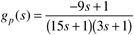

| [ Team LiB ] |
|
6.4 Direct SynthesisConsider the standard feedback block diagram shown in Figure 6-1. Recall that we could determine the performance or stability of the closed-loop system from the closed-loop transfer function In the direct synthesis procedure, we select a desired closed-loop response, gCL(s), and, based on the known process, gp(s), find the controller gc(s) that will yield this response. Solving Equation (6.6) for gc(s), we obtain By now you should be able to perform block diagram manipulations to find the relationship between any external signal [such as a setpoint change, r(s)] and any other signal on the control block diagram. For example, it is important to analyze the manipulated variable action required for a setpoint change to make certain that it is not too rapid or that it does not violate constraints. From Figure 6-1 we can easily derive the effect of the setpoint change on the manipulated variable action, The direct synthesis procedure then consists of specifying the desired closed-loop transfer function (e.g., first-order response, second-order underdamped, etc.), gCL(s), using Equation (6.7) to find the feedback controller, and considering the manipulated variable response (usually tested by simulation). The real question is: How do we specify the desired closed-loop response? It turns out that we are not limited by the desired closed-loop response, if the system is minimum phase (the process does not have RHP zeros or time delays—the terminology becomes clear in Chapter 7). In the following section we present the direct synthesis method for minimum-phase systems, and cover non-minimum-phase systems in the subsequent section. Direct Synthesis for Minimum-Phase ProcessesIt seems fairly natural to specify a desired closed-loop response that is first order, since we understand the characteristics of a first-order response.
For a specified first-order response, there is only one tuning parameter, l, since we desire a closed-loop gain of 1 (we want the process output to equal the setpoint as the closed-loop system goes to a new steady state); small values of l results in fast responses, while large values result in slow responses. One could also argue for a desired closed-loop response that is second order and underdamped, which would lead to specifying two parameters. Example 6.2: Direct Synthesis For a First-Order ProcessConsider a first-order process Assume that a first-order closed-loop response is specified. If we desire a fast closed-loop response, we make l small; for a slower (more "robust") response, we make l large. Solving for gc(s) from Equation (6.7), we find which can be written (by multiplying by tp/tp) Recall that the form of a PI controller is so that our direct synthesis controller for a first-order process is simply a PI controller, where Notice that there was only one "tuning parameter" for this direct synthesis example. The desired closed-loop time constant, l, was the only adjustable parameter. Given the first-order transfer function parameters (kp and tp) and the desired closed-loop time constant (l), we found that the direct synthesis controller was PI, but that we only needed to "adjust" one PI parameter (kc). This is a nice result, because once we find the process time constant (tp), we can set the integral time (tI) equal to the time constant, and tune kc on-line until we achieve a desired response. Tuning a single controller parameter is much easier than tuning two or three. Numerical ExampleConsider the following first-order process, with a time constant of 10 minutes and a process gain of 2 %/% The output and manipulated variable responses for l = 1, 5, and 10 min (tI = 10; kc = 5, 1, and 0.5, respectively) are shown in Figure 6-5. As expected, the manipulated variable response for the faster desired closed-loop time constant is much more aggressive than for the slower closed-loop time constants. Notice that setting the closed-loop time constant equal to the open-loop time constant (l = tp = 10) results in a single step change in the manipulated variable action. Figure 6-5. Response to a unit step setpoint change.The same type of procedure shown in Example 6.2 can be used if a second-order closed-loop response is specified. See Exercise 13. Direct Synthesis for Nonminimum-Phase ProcessesThis section presents examples for nonminimum-phase processes, that is, processes that have time delays or RHP zeros. The general technique remains the same for these processes; however, there is a restriction on the type of closed-loop response that can be specified. The next example provides the motivation for specifying different desired closed-loop responses for systems with time delays. Example 6.3: First-Order + Dead Time ExampleConsider the following process transfer function: If the desired closed-loop response is first order, gCL(s) = 1/ls + 1, the resulting controller is which is a PI controller with an additional term (e3s). This additional term is not physically realizable because it requires knowledge of future errors to obtain the current control action. This is clearly impossible. Perhaps this is shown more clearly in the time domain where the control action at time t depends on the error at time t + 3, which is clearly impossible to implement. The next example shows how a system with a RHP zero must have a modified desired closed-loop response. Example 6.4: Process with a RHP ZeroConsider a process with the following transfer function, where the time unit is minutes  The direct synthesis procedure with gCL(s) = 1/ls + 1 yields the controller which is unstable because of the RHP pole. The RHP pole in the controller is due to the inversion of the process zero. This inversion occurs because of the specification of a first-order closed-loop response. The output and manipulated variable responses are shown in Figure 6-6 for l = 5 minutes. Notice that the inverse response does not appear in the output variable but that the manipulated variable is unbounded (unstable). This is often called internal instability. Figure 6-6. Response to a unit step setpoint change when the controller is unstable.Clearly, the manipulated variable for any physical system will eventually hit a constraint, making the closed-loop system effectively open-loop, since the controller is no longer functioning. It is easy to understand the behavior shown in Figure 6-6. On a short timescale, the process appears to the controller to have a negative gain, since a step change in the manipulated variable yields an output that initially dips before going in the positive direction. The controller is acting on this effective "negative gain" to continually force the manipulated variable in a negative direction. The reader should verify that once the manipulated variable hits a lower bound, the process output will begin to decrease. Specifying a desired first-order closed-loop response for a system with a RHP zero resulted in an unstable controller and unbounded manipulated variable action. A stable controller can be obtained if the desired closed-loop response has the same RHP zero as the process. Reformulation of the Desired ResponseIncluding the right-half-plane zero desired closed-loop transfer function specified as using the direct synthesis procedure, you should find the following controller, which is an ideal PID controller cascaded with a first-order filter. The parameters are The output and input responses for a step setpoint change with l = 5 minutes are shown in Figure 6-7. The closed-loop system has inverse response (as specified by the closed-loop transfer function) and reasonable manipulated variable action. Figure 6-7. Responses to a unit step setpoint change at t = 0 minute, when RHP zero is in the desired response (l = 5). |
| [ Team LiB ] |
|